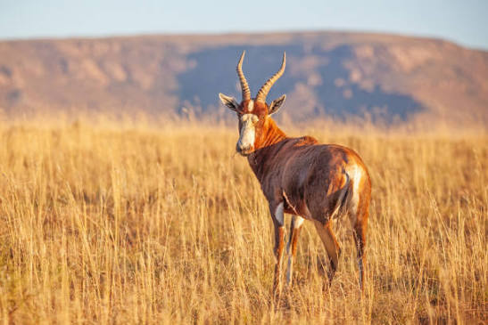

A striking antelope with a bold white blaze on its face and a robust, richly coloured body, the blesbuck prefers open grassland and can be found in herds across the North West bushveld. The distinctive facial marking makes it one of the most visually recognisable animals on any trophy list.
Contact our team of professional hunters to plan your South African adventure.